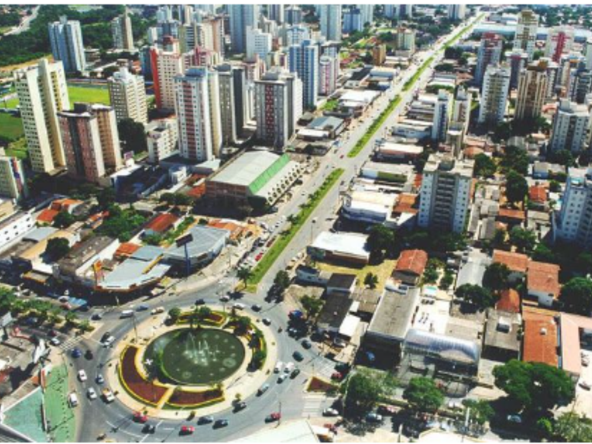

O estado de Goiás está localizado na região Centro-Oeste do Brasil e possui grande importância econômica e cultural. Sua capital é Goiânia, conhecida pela qualidade de vida e áreas verdes. A economia goiana se destaca pela agropecuária, mineração e produção industrial. O estado também é famoso por suas festas tradicionais, culinária típica e belas paisagens naturais. Além disso, Goiás abriga cidades históricas e importantes pontos turísticos, como Pirenópolis e o Parque Nacional da Chapada dos Veadeiros.

Voltar